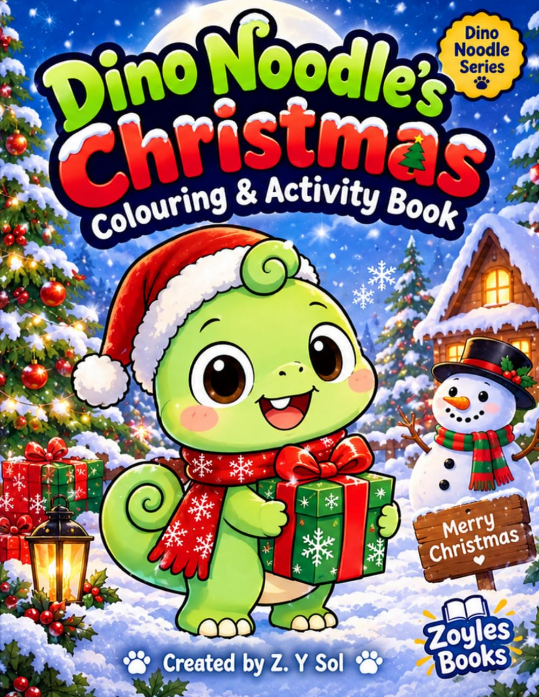
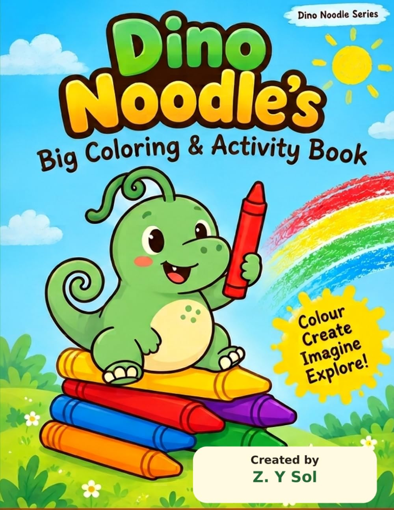
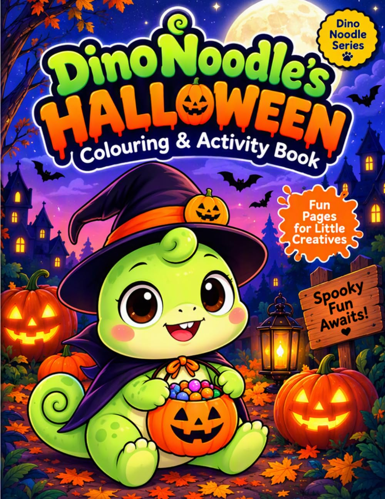

Dino Noodle's Christmas: Big Colouring & Activity Book
Festive colouring scenes, puzzles and activities with Dino Noodle. A perfect stocking filler for ages 3–6.
Amazon UK Amazon USMeet Dino Noodle: curious, kind and a little bit clumsy. Print three free colouring pages, then explore the books.
Free colouring pages The booksClick a page to open the PDF, then print on A4 or US Letter. Free for personal use.

Festive colouring scenes, puzzles and activities with Dino Noodle. A perfect stocking filler for ages 3–6.
Amazon UK Amazon US
20 cheerful scenes — kites, sandcastles, baking, space — plus tracing, spot-the-difference and shadow matching. Ages 3–6.
Amazon UK Amazon US
Friendly (not scary!) Halloween colouring and puzzles: pumpkins, costumes and moonlit fun. Ages 3–6.
Amazon UK Amazon US